사진 속 학생은 지금 외국인들 사이에서, 영어로 자기 생각을 말하고 있습니다. 화면에 띄워진 토론 주제는 "세계가 하나의 국제 통화를 채택해야 하는가." 어른도 쉽지 않은 주제를, 영어로 듣고 반박하고 설득합니다.
대단한 아이의 특별한 이야기처럼 보이실 겁니다. 그런데 이 학생의 시작은, 지금 이 글을 읽는 어머님의 아이와 다르지 않았습니다.
이 학생은 시은영어 중등부에서
영어를 시작했습니다.
평범했던 중학생이, 지금은 문일고 2학년 1등급입니다
이 학생이 시은영어에 왔을 때는 그저 동네 중학생이었습니다. 천재도, 영재도 아니었습니다. 다만 제대로 된 방향으로, 제때 시작했을 뿐입니다.
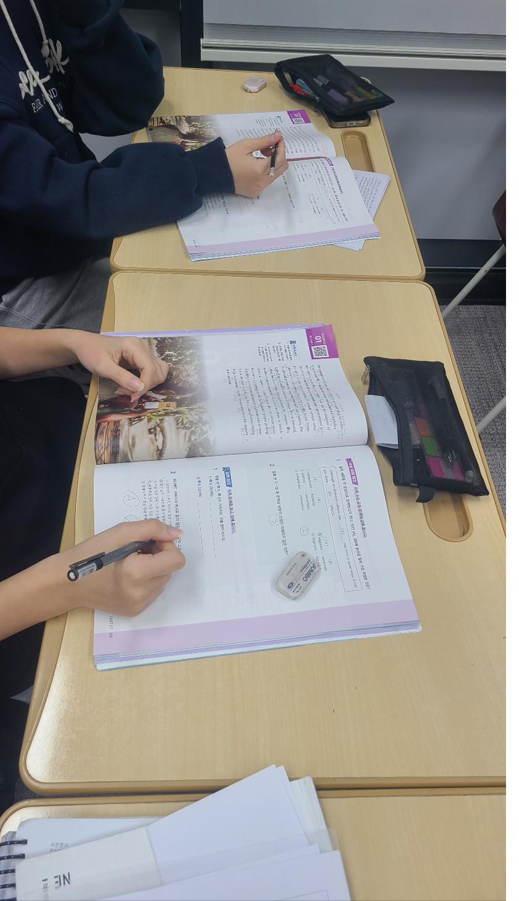
그 아이는 지금 문일고 2학년, 영어 1등급입니다. 그리고 학교를 넘어 국제 무대에서 영어로 토론하는 자리에까지 섰습니다. 중학교 때 쌓은 단단한 기초가, 고등학교에서 흔들리지 않는 실력이 되고, 그 실력이 교실 밖 무대로까지 아이를 데려간 것입니다.
"우리 애가 저렇게 될 수 있을까?" — 이 글을 보시는 어머님이 떠올리실 질문입니다. 답을 먼저 드리면, 이 학생도 처음엔 똑같은 출발선에 있었습니다. 차이를 만든 건 재능이 아니라 시작한 시점이었습니다.
한 명의 기적이 아닙니다
혹시 "운 좋은 한 명의 이야기 아닌가" 생각하실 수 있습니다. 그래서 다른 아이들의 결과도 함께 보여드립니다.
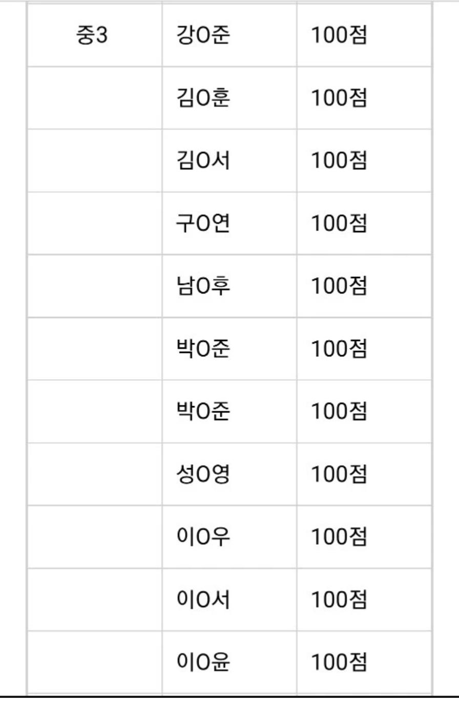
모의고사 영어 1등급, 94점, 96.5점, 그리고 원하던 대학 합격 소식까지. 이건 한 명의 예외가 아니라, 방향이 맞으면 반복해서 나오는 결과입니다.
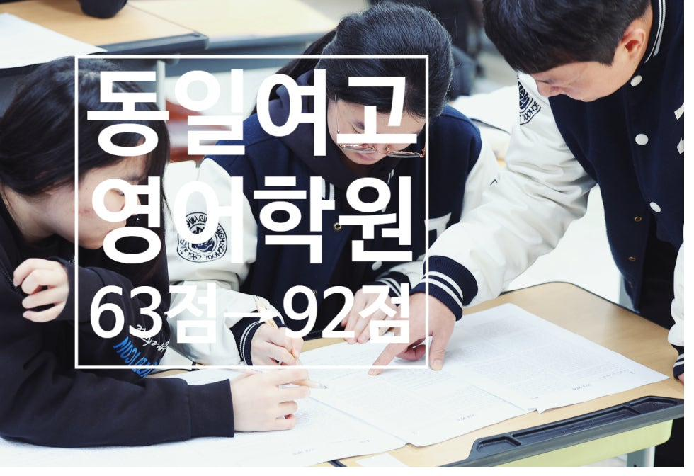
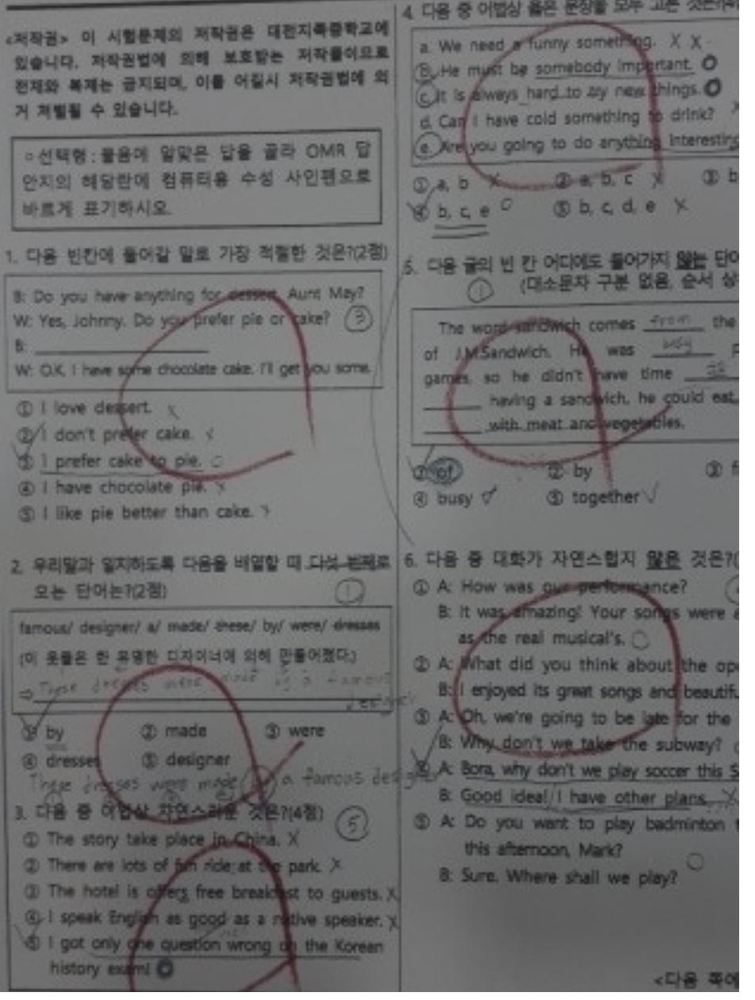
처음부터 잘하던 아이만 잘된 게 아닙니다. 63점이던 아이가 92점이 되고, 30점대였던 아이가 두 번의 시험 만에 93점으로 올라 학교에서 상을 받았습니다. 지금 우리 아이의 점수가 출발점을 정하지 않습니다.
부모님들이 직접 남긴 이야기
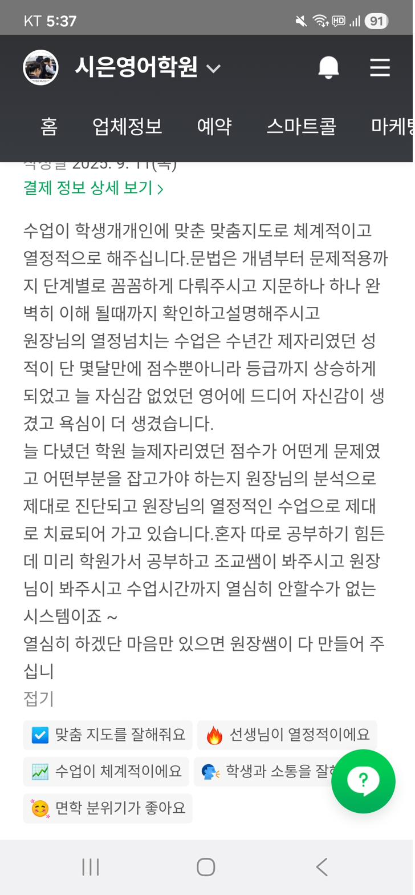
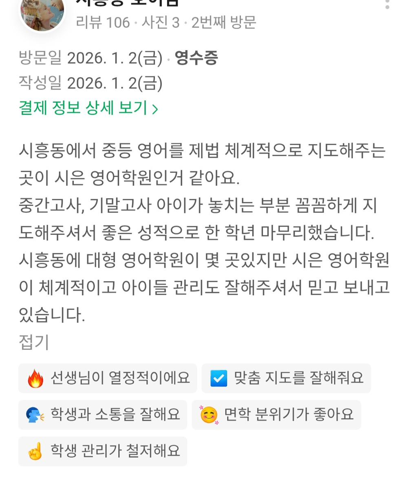
그런데 왜, 하필 지금일까요
고등학교 영어 1등급은 고등학교에 가서 만들어지지 않습니다. 고1 첫 시험에서 이미 중학교 3년의 누적이 드러납니다. 그때 기초가 비어 있으면, 고등학생은 그 빈칸을 메울 시간이 없습니다. 진도와 시험에 쫓기느라.
그래서 진짜 승부는
중학교에 들어가기 전, 지금 갈립니다.
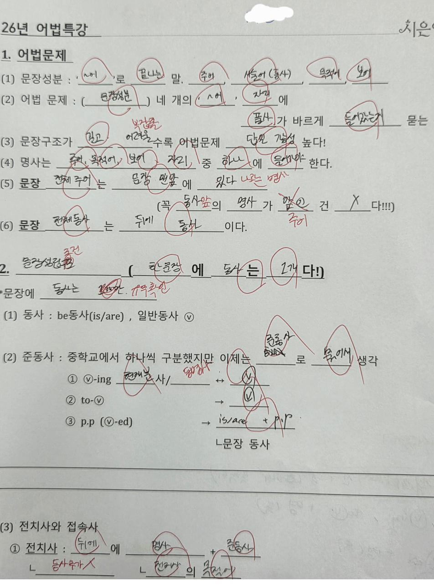
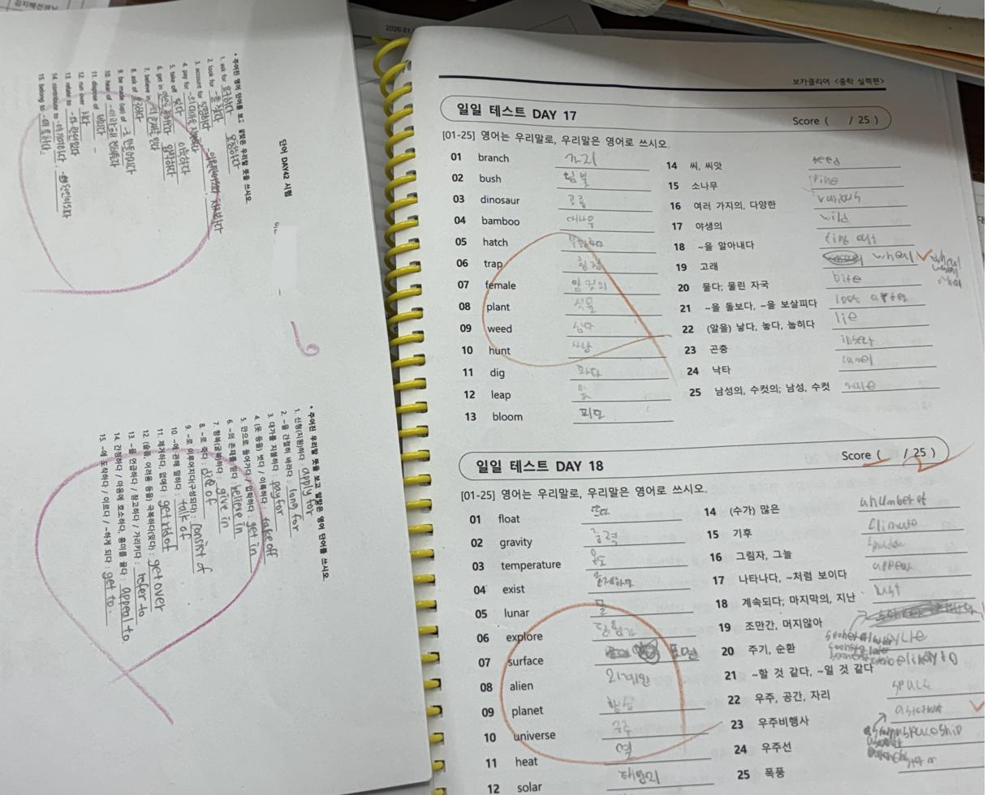
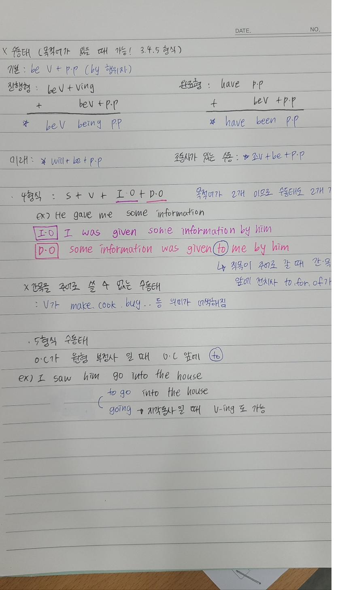
예비중1과 초6은, 아직 진도에 쫓기지 않는 거의 마지막 시기입니다. 이때 영어의 뼈대 — 어휘, 문장 구조, 독해의 습관 — 를 제대로 세워두면, 중학교도 고등학교도 흔들리지 않습니다. 사진 속 그 학생이 걸어간 길이 정확히 이것입니다.
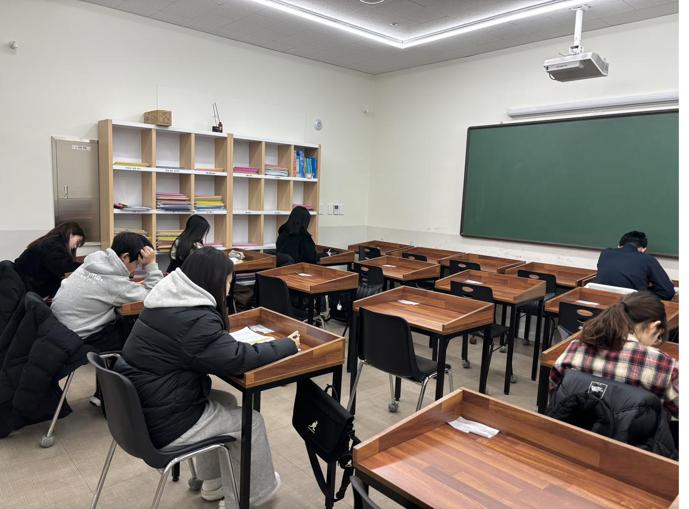
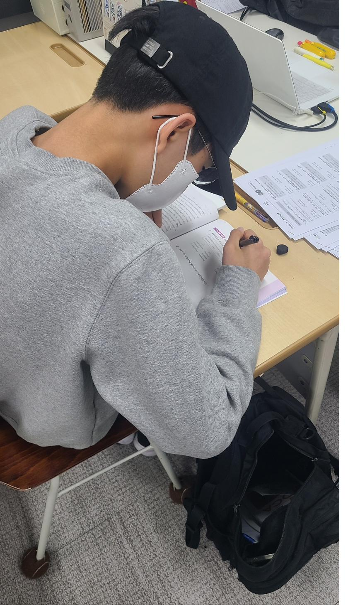
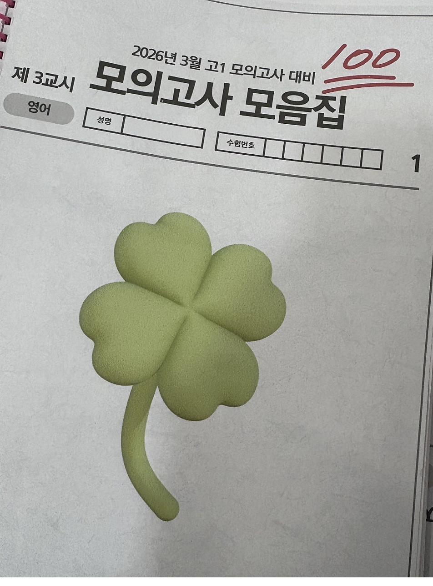
아이의 3년 뒤를 미리 그려보셨으면 합니다
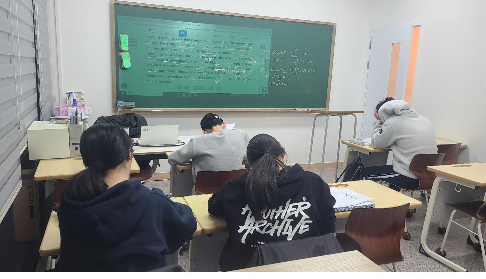
지금 어머님 앞에 있는 아이와, 3년 뒤 고등학교에서 영어로 자신 있게 시험지를 마주하는 아이. 그 사이를 잇는 다리가 바로 이 시기입니다. 사진 속 학생도 한때는, 지금 어머님의 아이와 똑같은 자리에 앉아 있던 평범한 중학생이었다는 것. 그것 하나만 기억해 주셨으면 합니다.
"우리 애도, 정말 저렇게 될 수 있을까?"
그 질문이 드셨다면 — 지금이 바로 그 시작점입니다.
현 초6 · 예비중1 과정, 7월 둘째 주 개강합니다.
자세한 모집 안내는 곧 이어지는 글에서 전해드리겠습니다. 먼저 우리 아이의 현재 위치가 궁금하시다면, 아래로 가볍게 문의해 주세요.